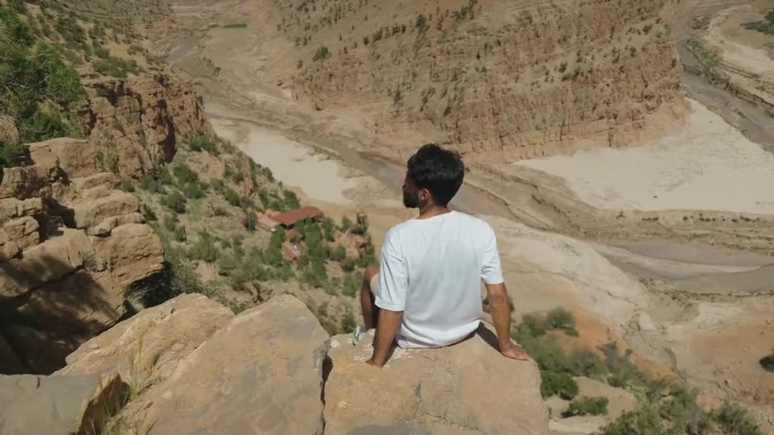
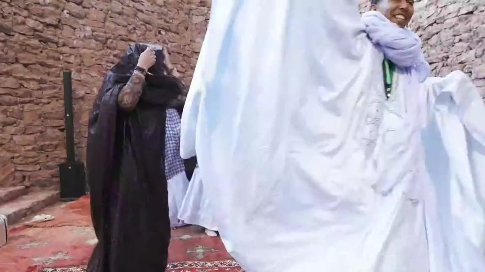
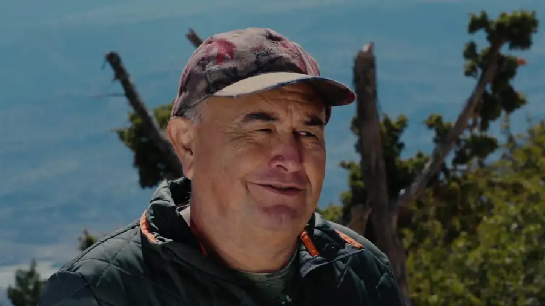
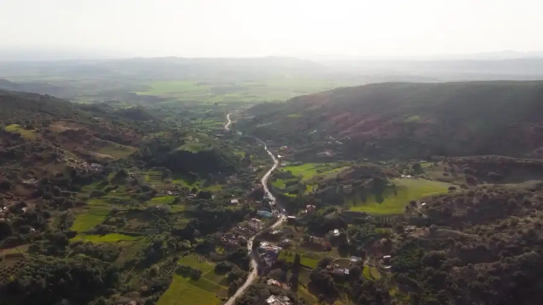
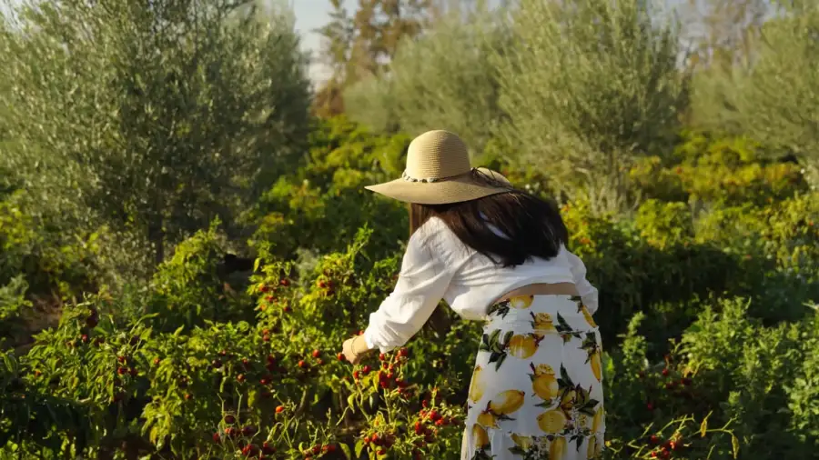
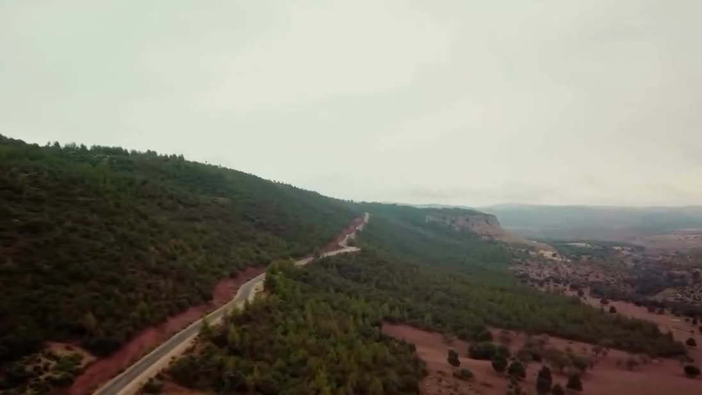
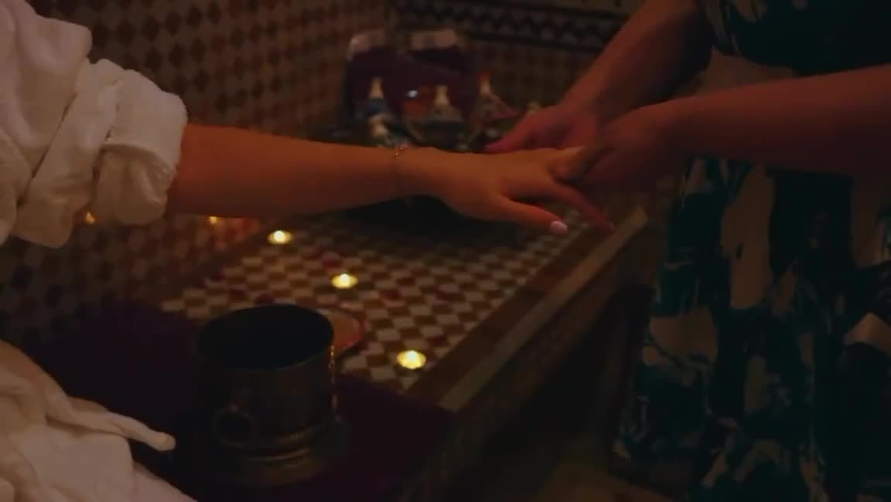
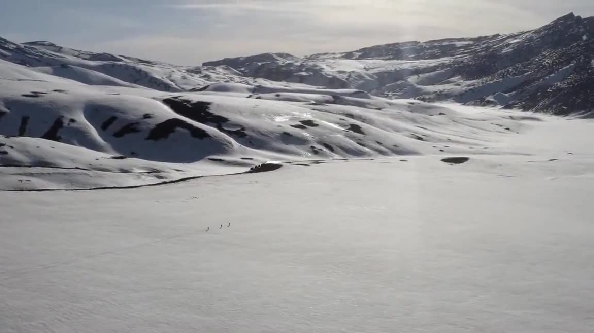

Cinematography · CRI Marrakech-Safi
Parc Industriel Marrakech
A corporate film on the Marrakech industrial park for the regional investment centre. Filmed in Marrakech, Morocco.
ClientCRI Marrakech-Safi
Our roleShoot · Edit · Grade
LocationMarrakech, Morocco
CategoryCinematography
Want a film like this?
Atay Studio shoots, edits, grades and finishes in-house from Marrakech. Tell us the brief, the dates and the place.
Message us on WhatsAppEmail usMore work

Where memories are madeBeni Mellal-Khénifra
Playing for ChangeFestival Zamane
La Chasse Bin El OuidaneBin El Ouidane
Dar ZayaneDar Zayane
Cooperative El KaramaCoopérative El Karama
Visit Béni Mellal–KhénifraCRT Béni Mellal–Khénifra
Palais Amani · FezPalais Amani
A year in Béni Mellal–KhénifraBéni Mellal–Khénifra region